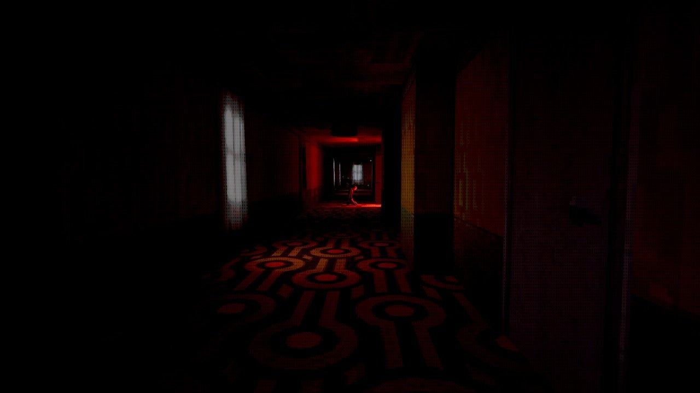
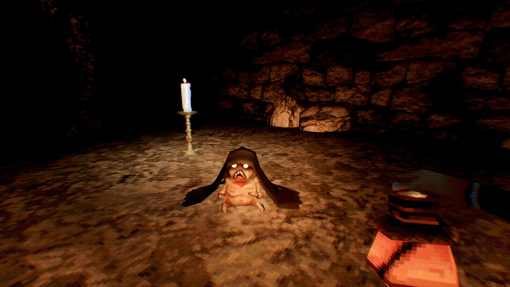
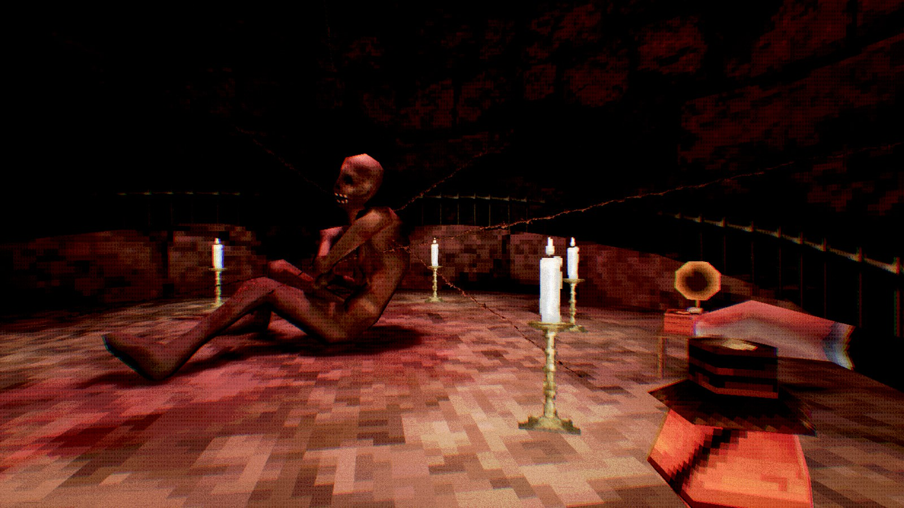

Little Vale is introduced to you, the protagonist who is a delivery man, as a squeaky clean religious small town until one night. All hell breaks loose with rampant demons running about and portals opening up everywhere, the task is to escape this hell hole in one while discovering the mysteries ofthe little town that little by little explains how the sudden change to a more hell like environment is no coincidence. If it isn't clear, by default I love horror games that have old school visuals, pixals supremacy! It makes everything look more rough and scary, especially with the character models which are the highlights of this game in my opinion. The palette choice (once it becomes hell on Earth) of very warm browns/ rustic red compliments the pixelated style as well.
  